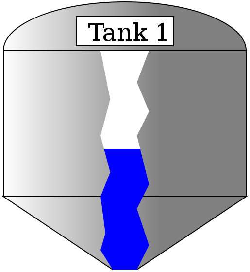
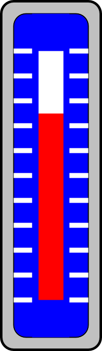
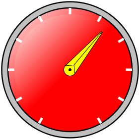
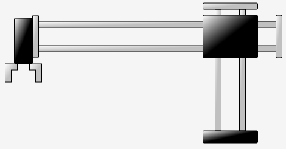
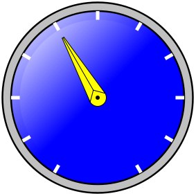

MBLogic
for an open world in automation
MBLogic
for an open world in automation
Help - HMI Tanks, Gauges, and Miscellaneous
Overview:
Tanks and gauges are graphical elements that can be used to display analogue values in an "graphic" manner (as opposed to numbers). As well, arbitrary graphics can be displayed in a "slide show" fashion which displays one image at a time, or they can be moved about or rotated using the functions described here.
   
Tank Display:
A tank display works by operating on a linear gradient which is associated with the "fill" property of an SVG element. Any closed shape may be considered a tank. The example shown below uses a simple rectangle with rounded ends (the corner radius is very large). The level of the fill colour will move up and down in the tank corresponding to an integer value between 0% and 100%.
The tank display is compatible with the display list.
SVG for Simple Tank
This tank is simply a rectangle with rounded ends. The ends were made rounded by simply specifying a corner radius parameter that was half the width of the rectangle ('rx="62"').
<defs> <linearGradient id="TankFill1" x1="0" y1="1" x2="0" y2="0"> <stop offset="0%" stop-color="blue" /> <stop id="TFill1A" offset="60%" stop-color="blue" /> <stop id="TFill1B" offset="60%" stop-color="white" /> <stop offset="100%" stop-color="white" /> </linearGradient> </defs> <!-- Display tank 1. --> <g transform="translate(30,25)"> <rect x="0" y="0" width="125" height="300" rx="62" fill="url(#TankFill1)" stroke="purple" stroke-width="20"/> </g>
SVG for Fancy Tank
This is a more elaborate tank. Most of this is simply a background image in SVG to draw the decorative part of the tank. The actual level indicator is simply an irregular closed shape created using a polygon. It otherwise works exactly the same as the simple tank. The colours of the decorative part of of tank are set via the parameters in the "tankdecorate" linear gradient.
The following is the definition for the decorative parts of the tank ("MB_TankBackground") as well as the animated column ("MB_TankColumn"). The colour of the tank is defined in the tank definition, and must be changed there if necessary.
<defs> <!-- This is a decorative gradient. Change the colours here to change the colour of the tank. Change the x and y parameters to change the direction of the shadown effects. --> <g id="MB_TankBackground"> <linearGradient id="MB_TankDecorate" x1="1" y1="0" x2="0" y2="0"> <stop offset="35%" stop-color="grey" /> <stop offset="100%" stop-color="white" /> </linearGradient> <!-- Display tank. This draws the tank itself. --> <g stroke="black" stroke-width="2" fill="url(#MB_TankDecorate)"> <!-- Roof of the tank. --> <ellipse cx="250" cy="0" rx="250" ry="100"/> <!-- Main body of the tank. --> <rect x="0" y="0" width="500" height="300"/> <!-- Bottom cone of the tank. --> <polygon transform="translate(0,300)" points="0,0 500,0 275,150 225,150 0,0" /> </g> </g> <!-- Decorative cut-away to show the contents of the tank. This shows the level of the tank contents. --> <g id="MB_TankColumn"> <polygon transform="translate(200,0)" points="0,0 20,100 0,175 20,250 0,300 10,375 0,410 25,450 75,450 100,400 75,325 100,275 75,175 100,125 75,65 100,0 0,0" /> </g> <!-- End of tank definition. --> </defs>
This shows how to use the "fancy" tank.
<g transform="translate(100,200) scale(0.5,0.5)"> <!-- This is the main structure and background for the tank. --> <use xlink:href="#MB_TankBackground"/> <!-- This gradient controls the tank fill. Change the colours here to change the colour of the fill indicator column. --> <linearGradient id="TankFill1" x1="0" y1="1" x2="0" y2="0"> <stop offset="0%" stop-color="blue" /> <stop id="TFill1A" offset="10%" stop-color="blue" /> <stop id="TFill1B" offset="90%" stop-color="white" /> <stop offset="100%" stop-color="white" /> </linearGradient> <!-- Decorative cut-away to show the contents of the tank. This shows the level of the tank contents. --> <g fill="url(#TankFill1)"> <use xlink:href="#MB_TankColumn"/> </g> <!-- Label for the name of the tank. Change the text here to change the label on the tank. --> <rect x="150" y="-70" width="200" height="60" fill="white" stroke="black" stroke-width="2"/> <text x="175" y="-20" font-size="50">Tank 1</text> </g> <!-- End of tank definition. -->
Javascript
// Tank 1 fill level graphic display. var Tank1 = new MB_TankLevel(document, "TFill1A", "TFill1B"); MBHMIProtocol.AddToDisplayList(Tank1, "Tank1Level", "read");
Javascript Library Functions:
The following Javascript library functions are useful for this feature:
- MB_TankLevel
How it works:
The tank display works by manipulating the colour gradient stops for a linear gradient used as the "fill" property for an SVG element. A linear gradient stop defines the range over which two different colours blend into each other.
A linear gradient can have any number of stops. For a tank display, we define 4 stops. The first and last stops are 0% and 100% respectively. These stops are fixed and do not change. The middle two stops are manipulated via Javascript. These middle two stops are set to the same value.
Two colours are defined for the tank. The first and second stops are set to the first colour. The third and last stop are set to the second colour. The colours are defined in the linear gradient.
The end result of this a shart colour transition between the second and third stops. This transition is then moved up and down (or back and forth) to give the appearance of a changing liquid level. The direction the gradient moves in is determined by the x1, y1, x2, y2 parameters in the linear gradient definition. The relative values of these can be altered to change the direction the gradient moves in.
Column Gauges:
A column gauge is used to give a visual representation of an analogue value. A column of colour will move up and down in the gauge to give a representation of the magnitude of the monitored value. A column gauge is compatible with the display list.
SVG
This shows the definition for the linear gauge. "MB_ColumnGaugeBackground" provides the decorative background, while "MB_ColumnGaugeColumn" provides the rectangle which forms the actual gauge.
<!-- This is a linear column gauge. --> <defs> <!-- This is the background of the assembly. --> <g id="MB_ColumnGaugeBackground"> <!-- This adds the outer ring. --> <rect x="0" y="0" width="200" height="700" rx="25" fill="silver" stroke="black" stroke-width="5px"/> <!-- This adds the inner background. --> <rect x="25" y="25" width="150" height="650" rx="25" stroke="black" stroke-width="2px"/> <!-- These add the "tick" marks to the background. --> <g transform="translate(25,100)" stroke="white" stroke-width="10px"> <line x1="0" y1="0" x2="150" y2="0"/> <line x1="0" y1="50" x2="150" y2="50"/> <line x1="0" y1="100" x2="150" y2="100"/> <line x1="0" y1="150" x2="150" y2="150"/> <line x1="0" y1="200" x2="150" y2="200"/> <line x1="0" y1="250" x2="150" y2="250"/> <line x1="0" y1="300" x2="150" y2="300"/> <line x1="0" y1="350" x2="150" y2="350"/> <line x1="0" y1="400" x2="150" y2="400"/> <line x1="0" y1="450" x2="150" y2="450"/> <line x1="0" y1="500" x2="150" y2="500"/> </g> <!-- This covers the inner part of the "tick" marks. --> <rect x="62" y="25" width="75" height="650" rx="0" stroke="none" stroke-width="0px"/> </g> <!-- This is the actual column which we manipulate. The reading is manipulated by changin the associated linear gradient. --> <g id="MB_ColumnGaugeColumn"> <rect x="75" y="100" width="50" height="500" stroke="none" stroke-width="0"/> </g> </defs>
This shows how to use the linear gauge. This requires the background, the column, and a linear gradient.
<!-- This is a linear column gauge. --> <!-- This is used to locate and scale the entire assembly. --> <g transform="translate(325,25) scale(0.15)"> <!-- This is the background for the gauge. --> <g fill="blue"> <use xlink:href="#MB_ColumnGaugeBackground"/> </g> <!-- This is the linear gradient for the column gauge. The X and Y parameters control the direction the gradient moves in. --> <defs> <linearGradient id="ColumnGauge1" x1="0" y1="1" x2="0" y2="0"> <stop offset="0%" stop-color="red" /> <stop id="Gauge1A" offset="10%" stop-color="red" /> <stop id="Gauge1B" offset="90%" stop-color="white" /> <stop offset="100%" stop-color="white" /> </linearGradient> </defs> <!-- This is the actual column which we manipulate. The reading is manipulated by changin the associated linear gradient. --> <g fill="url(#ColumnGauge1)"> <use xlink:href="#MB_ColumnGaugeColumn"/> </g> </g>
Javascript
// Column gauge graphic display. This is tied to Tank 2 level // This can use the tank control, because it is basically the same thing. var Column1 = new MB_TankLevel(document, "Gauge1A", "Gauge1B"); MBHMIProtocol.AddToDisplayList(Column1, "Tank2Level", "read");
Javascript Library Functions:
The following Javascript library functions are useful for this feature:
- MB_TankLevel
How it works:
The column gauge is just another form of tank display. The column forms the tank, and the rest of the gauge is just decoration.
Dial Gauges:

A dial gauge is used to give a visual representation of an analogue value. A pointer will rotate about the gauge to give a representation of the magnitude of the monitored value. A dial gauge is compatible with the display list.
SVG
This shows the definition for the dial gauge. "MB_DialGaugeBackground" provides the decorative background, while "MB_DialGaugePointer" provides the rotating pointer. The dial background can be assigned any colour or gradient. The pointer can also be assigned any colour of background.
<!-- This is a rotary dial gauge. --> <defs> <!-- This is a dial. the first tick mark is at 30 degrees, and the last at 330. --> <!-- This is used to locate and scale the entire assembly. --> <g id="MB_DialGaugeBackground"> <!-- This adds the outer ring. --> <circle cx="0px" cy="0px" r="275px" fill="silver" stroke="black" stroke-width="5px"/> <!-- This adds the outer part of the dial background. --> <circle cx="0px" cy="0px" r="250px" stroke="black" stroke-width="5px"/> <!-- These add the "tick" marks to the dial. --> <g stroke="white" stroke-width="10px"> <line x1="0" y1="-250" x2="0" y2="0"/> <line x1="0" y1="-250" x2="0" y2="250" transform="rotate(30)"/> <line x1="0" y1="-250" x2="0" y2="250" transform="rotate(60)"/> <line x1="0" y1="-250" x2="0" y2="250" transform="rotate(90)"/> <line x1="0" y1="-250" x2="0" y2="250" transform="rotate(120)"/> <line x1="0" y1="-250" x2="0" y2="250" transform="rotate(150)"/> </g> <!-- This covers the inner part of the "tick" marks and provides most of the dial background. --> <circle cx="0px" cy="0px" r="225px" stroke="none" stroke-width="0px"/> </g> <!-- This is the actual pointer which we rotate. --> <g id="MB_DialGaugePointer"> <!-- This is the centre part of the pointer. --> <circle cx="0px" cy="0px" r="25px" stroke="black" stroke-width="2px"/> <circle cx="0px" cy="0px" r="5px" fill="black" stroke="black" stroke-width="2px"/> <!-- This is the pointer. --> <polygon stroke="black" stroke-width="2px" points="-25,0 -3,200 3,200 25,0 0,25" /> <line x1="0" y1="25" x2="0" y2="200" stroke="black" stroke-width="2px"/> </g> </defs>
This shows how to use the dial gauge. This requires the background and the pointer.
<!-- This is a dial. --> <!-- This is used to locate and scale the entire assembly. --> <g transform="translate(50,75) scale(0.15)"> <g fill="url(#MB_BlueGradient)"> <use xlink:href="#MB_DialGaugeBackground"/> </g> <g id="Dial1" fill="yellow"> <use xlink:href="#MB_DialGaugePointer"/> </g> </g>
Javascript
// Dial gauge graphic display. This is tied to Tank 1 level var Dial1 = new MB_DialGauge(document, "Dial1", 30, -5.0, 3.33); MBHMIProtocol.AddToDisplayList(Dial1, "Tank1Level", "read");
Javascript Library Functions:
The following Javascript library functions are useful for this feature:
- MB_DialGauge
How it works:
The pointer is rotated on a fixed background. MB_DialGauge peformns a rotational transformation on the SVG elements whose id was passed as a parameter to it.
The rotation is calculated as: angle = (newvalue + min_angle) * gain + dial_offset. In the above example, this would be angle = (newvalue + 30) * 3.33 + -5.0.
Any graphical element capable of being rotated may be used as a dial gauge.
Graphical Slide Shows
Graphical "slide shows" can be created using SVG to control the display of arbitrary graphics. A series of static graphics can be created where only one graphic at a time is displayed. This may for example, be used to display a series of images showing a product at various stages of assembly.
In the following example we show a circle, square, and octagon. Only one image is visible at a time.
SVG
<!-- Shape select demo. --> <g transform="translate(700,150)"> <circle id="ShapeDemoCir" cx="0px" cy="0px" r="35px" stroke="black" stroke-width="5px" fill="red"/> <rect id="ShapeDemoRect" x="-30" y="-30" width="60" height="60" rx="15" stroke="black" stroke-width="5px" fill="yellow"/> <polygon id="ShapeDemoOct" stroke="black" stroke-width="5px" fill="violet" points="13,-35 -13,-35 -35,-13 -35,13 -13,35 13,35 35,13 35,-13 13,-35" /> </g>
Javascript
This shows how the above series of graphics are displayed using Javascript.
// Select a shape for display. var ShapeDemoDisplay = new MB_GraphicSelect(document, ["ShapeDemoCir", "ShapeDemoRect", "ShapeDemoOct"], 1); MBHMIProtocol.AddToDisplayList(ShapeDemoDisplay, "ShapeDemo", "read");
Javascript Library Functions
The following Javascript library functions are useful for this feature:
- MB_GraphicSelect
How it Works
"MB_GraphicSelect" operates in a manner very similar to that used by the 7 segment LED digit display (see the section on numeric display for information on that topic). The various SVG graphics are created and positioned on top of each other. "MB_GraphicSelect" is then used to select one of these for display (this is similar to how different "screens" are made visible one at a time).
"MB_GraphicSelect" requires a list of the "id" names, and an "offset" integer. The order of the "id" names in the list matters, as the monitored tag value is used as an index for the list. The first item is "0", the second is "1", the third is "2", etc.
The offset is added to the monitored value before selecting the image. This allows data ranges which do not start at zero to be used directly as image selectors. For example, if an offset of "1" is used, then a monitored value of "-1" becomes "0", and the first image is selected, a monitored value of "0" becomes "1" and the second image is selected, etc.
Two Position "Slides" or Translational Motions
It is possible to move SVG graphics using "translation" (sliding) motions. The following example uses a simple "pick and place" to illustrate this.
SVG
This shows the SVG for the example. Note that each collection of shapes is grouped together (using "<g> </g>" SVG tags). This allows several elements to be moved as a group. This is a fixed section (this does not move), a vertical axis (with an "id" of "PPVert"), a horizontal axis (with an "id" of "PPHorz"), a left gripper (with an "id" of "PPGripL"), and a right gripper (with an "id" of "PPGripR").
<!-- This displays a pick and place. --> <g transform="translate(50,75)"> <!-- Fixed section. --> <g transform="translate(320,0)"> <!-- Vertical rods. --> <rect x="20" y="10" width="10" height="200" rx="0" fill="url(#MB_SilverGradient)" stroke="black"/> <rect x="60" y="10" width="10" height="200" rx="0" fill="url(#MB_SilverGradient)" stroke="black"/> <!-- Base. --> <rect x="0" y="210" width="90" height="20" rx="2" fill="url(#MB_BlackGradient)" stroke="black"/> <!-- Top cap. --> <rect x="0" y="0" width="90" height="10" rx="2" fill="url(#MB_SilverGradient)" stroke="black"/> </g> <!-- Moving vertical axis. --> <g id="PPVert"> <!-- Horizontal axis. --> <g id="PPHorz" transform="translate(0,0)"> <!-- Horizontal rods. --> <rect x="40" y="30" width="400" height="10" rx="0" fill="url(#MB_SilverGradient)" stroke="black"/> <rect x="40" y="70" width="400" height="10" rx="0" fill="url(#MB_SilverGradient)" stroke="black"/> <!-- End caps. --> <rect x="440" y="20" width="10" height="70" rx="2" fill="url(#MB_SilverGradient)" stroke="black"/> <rect x="40" y="20" width="10" height="70" rx="2" fill="url(#MB_SilverGradient)" stroke="black"/> <rect x="10" y="25" width="30" height="75" rx="2" fill="url(#MB_BlackGradient)" stroke="black"/> <!-- Left Gripper. --> <polygon id="PPGripL" fill="url(#MB_SilverGradient)" stroke="black" points="0,130 0,100 20,100 20,110 10,110 10,130 0,130" /> <!-- Right Gripper. --> <polygon id="PPGripR" fill="url(#MB_SilverGradient)" stroke="black" points="50,130 50,100 30,100 30,110 40,110 40,130 50,130" /> </g> <!-- Block. --> <rect x="320" y="20" width="90" height="70" rx="2" fill="url(#MB_BlackGradient)" stroke="black"/> </g> </g>
Javascript
This shows the Javascript used to animate the pick and place. Note that there 4 Javascript objects had to be created - one for each moving group.
// Pick and place vertical axis. var PPVertDisplay = new MB_SlideDisplay(document, "PPVert", 0, 0, 0, 100); MBHMIProtocol.AddToDisplayList(PPVertDisplay, "PPVert", "read"); // Pick and place horzontal axis. var PPHorzDisplay = new MB_SlideDisplay(document, "PPHorz", 0, 0, 200, 0); MBHMIProtocol.AddToDisplayList(PPHorzDisplay, "PPHorz", "read"); // Pick and place left gripper jaw. var PPGripLDisplay = new MB_SlideDisplay(document, "PPGripL", -5, 0, 5, 0); MBHMIProtocol.AddToDisplayList(PPGripLDisplay, "PPGrip", "read"); // Pick and place right gripper jaw. var PPGripRDisplay = new MB_SlideDisplay(document, "PPGripR", 5, 0, -5, 0); MBHMIProtocol.AddToDisplayList(PPGripRDisplay, "PPGrip", "read");
Javascript Library Functions
- MB_SlideDisplay
How it Works
"MB_SlideDisplay" translates (or "slides") an SVG element or group of elements according to the state of a monitored boolean value. "MB_SlideDisplay" requires parameters which include the "id" of the element or group which is to be moved, and two sets of x/y coordinates.
The first pair of x/y coordinates is the position when the monitored boolean value is false, and the second pair of coordinates is the position when the monitored boolean value is true. The x/y coordinates are relative to the current coordinate system. It is normal to apply a translation to the entire assembly in order to position it on the page correctly, so the x/y coordinates being applied to animate the axis will depend on whatever other transforms have been already applied. This in turn means that provided you use an overall fixed transform to position the object on the page, you can design your graphics without being too concerned about its final location.
For example, the vertical axis (with an "id" of "PPVert") has a position of "0,0" when tag "PPVert" is false (we used the same name for the tag as we did for the "id", although this was not actually necessary). It has a position of "0,100" when the tag "PPVert" is true. This results in the entire vertical axis assembly moving up (along the "y" axis) by 100 pixels when the tag "PPVert" turns on.
Note that when the vertical axis moved, the horizontal axis and the grippers moved with it. This is because they were nested within the same "group" and so are affected by any transforms applied by the "outer" group.
Graphics which require rotary motions instead of (or as well as) translations can use "MB_DialGauge", which can be used for any graphic, not just dial gauges.